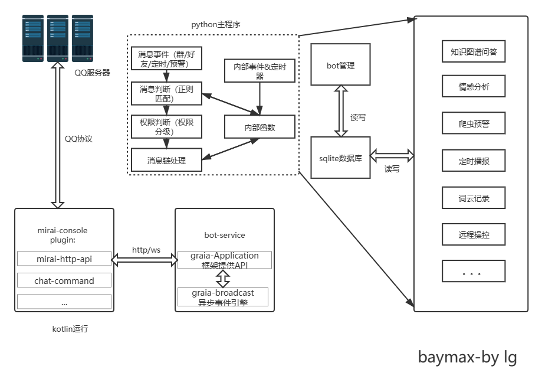

baymax
Baymax机器人使用说明
说明
🤖Baymax 是一个事件响应型机器人，可响应群聊消息、好友私信消息，由mirai强力驱动，自动化消息处理部分由python语言完成。

更新日志
2021-9-14 开始记录
2021-9-17 新增xml和json发送卡片消息
2021-9-20 新增🤖对话功能
2021-9-21 新增天气预报
2021-10-1 新增校园自动打卡
2021-10-7 新增自建医疗知识图谱对话
2021-10-20 添加WolframeAIpha调用、优化B站解析
计划实现的功能
[x] 对话🤖
[x] XML解析
[x] 知识图谱
[ ] 接入图像识别之类
[ ] 集群监控
[ ] 页面管理
[ ] LOL-OPGG接入
…
实现的功能
🤖Baymax 的功能分为响应 、定时 、广播 等
命令格式：[ ]为可选参数，< >为必选参数，|为或逻辑，@为在群内at特定的人
WolframeAIpha
调用WolframeAIpha解决一些高数问题）
缩写
从一段文本中检索并翻译缩写
API使用能不能好好说话
B站视频解析
用于解析关于B站的特定消息
| 类型 | 解析内容 |
|---|---|
| b23短链接（小程序分享/客户端分享） | 进一步解析以下重定向的内容 |
| av/bv号/视频链接/视频分享卡片 | 标题、封面、UP主、TAG、合作成员、简介、互动数据等 |
| 用户空间链接/ |
用户头像、昵称、等级、性别、粉丝数等 |
level：1

B站热榜
按照分区来获取B站热榜数据(前50)
level：1
盘头像
生成指定群员gif
level：1
搜番
搜索相关番剧获取详细信息
level：1
新番
获取B站1~7日内新番
level：1
二叉树
一个用来回忆二叉树 的知识的功能:)
level：1
KMP&Next数组
一个用来回忆KMP 的知识的功能:)
level：1
bot管理
用于修改群员操作权限以及黑名单功能
level限制：4（master）
聊天情感分析
nlp分析聊天中情感是否消极(使用三分类)
level：1
背单词
使用github上开源的词库json来进行数据支持
level：1
远程操控服务器
偶尔用来查看日志重启等操作
level限制：4（master）
闪照转换
用来保存闪照的功能
必须得master来开启此功能：）
防撤回
用来查看他人撤回信息的功能
必须得master来开启此功能：）
群内消息词云
用来查看群员讨论内容生成词云 的功能
查看自己的月词云年词云所需level：1
查看群内月词云年词云所需level：2
查梗
用来查询网络上的一些梗
level：1
搜图
搜索Pixiv图片的功能
在群中发送 搜图后，等待回应在30s内发送图片即可（多张图片只会搜索第一张）
必须得master来开启此功能：）
level：1
ip查询
一个查询ip详细信息的功能
level：1
Jhai功能
一个方便使用🐋平台的功能
level：3
添加回复关键字
添加一些关键字触发🤖回复
level：2
LeetCode
关于力扣的一些功能
level：1

新闻
调用API实现发送新闻功能
主动发送
level：2被动发送（定时）
早上九点自行发送

pdf搜索
pdf搜索📕
level：1
语音功能
用来发送语音的功能
需要master先打开此功能配置音色
level：1
steam游戏搜索
用来查询steam上游戏的功能
level：1
塔罗牌
调用塔罗牌的功能
level：1
翻译
用来翻译的功能-支持多种语言
level：1